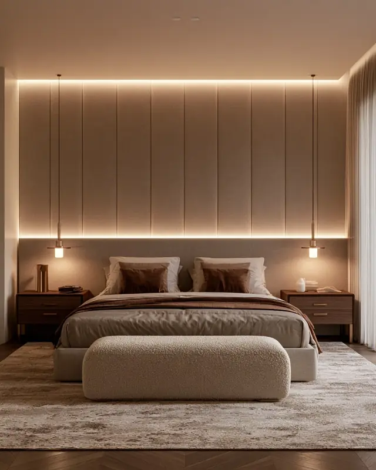

غرفة 4×4 كم مساحتها وكيف توزّعها؟
غرفة 4×4 أمتار مساحتها 16 متراً مربعاً، وهي من أشهر مقاسات غرف النوم في الشقق والفلل الصغيرة. المساحة تكفي لسرير مزدوج وخزانة وتسريحة أو طاولة جانبية، لكنها لا تتسامح مع التوزيع العشوائي. القاعدة التي نبدأ منها: ممر لا يقل عن 60 سم حول السرير، و90 سم أمام الخزانة ليسهل فتح الأبواب أو الأدراج.
توزيع مقترح بالمقاسات
- السرير: مقاس 160×200 سم مركّز على أحد الجدارين بطول 4 أمتار. يبقى على جانبيه نحو 120 سم، تكفي لطاولة جانبية بعرض 45 إلى 50 سم وممر مريح.
- الخزانة: على الجدار المقابل لرأس السرير بعمق 60 سم، وبهذا يبقى بين قدم السرير والخزانة قرابة 140 سم. وإذا استبدلت أبواب الفتح بأبواب سحب توفر مساحة الفتح كلها.
- التسريحة أو المكتب: مقابل السرير أو بجانب النافذة بعمق لا يزيد عن 40 سم، أو طاولة تعليق على الجدار بدل قطعة أرضية.
- السرير الأكبر: إن أردت سريراً بمقاس 180×200 يبقى نحو 110 سم على كل جانب، وهو ما زال مقبولاً بطاولة جانبية صغيرة.
هذه مقاسات إرشادية، والتصميم النهائي يعتمد على موقع الباب والنافذة واتجاه المساحة، لذلك نطلب مقاسات الغرفة وصورها قبل أن نرسم التوزيع.
الألوان بأكواد جوتن
الغرفة الصغيرة تستفيد من الدرجات الفاتحة الدافئة لأنها تعكس الضوء وتوسّع النظر. نقترح لجدران الغرفة تندر غريج (جوتن 12306)، وهي درجة رمادية دافئة هادئة، مع جدار رأس السرير أو لمسات القماش والستائر بدرجة لاتاي (جوتن 1393). السقف أبيض دافئ، والأرضية بخشب أو سيراميك بدرجة فاتحة قريبة من البيج الرملي.
لا تقارن الكود على الشاشة فقط، فالألوان تختلف حسب الإضاءة. خذ عيّنة من محل الدهان وجرّبها على الجدار في الصباح والمساء قبل الشراء. تجد أكواد أخرى في دليل ألوان البيت السعودي.
الإضاءة والتخزين في 16 متراً
الإضاءة العامة الخافتة بحرارة لونية قريبة من 2700K تعطي أجواء الراحة، وتضاف إليها إنارة جانبية بجوار السرير بدل الاعتماد على نقطة واحدة في السقف. أما التخزين فالمفتاح هو الارتفاع: خزانة حتى السقف، وسرير بأدراج أو رفوف علوية فوق الباب. الستائر المعتمة تحجب الضوء وتحسّن النوم.
أخطاء شائعة في غرف 4×4
- اختيار سرير أكبر من المساحة فيضيع الممر.
- أثاث غامق وثقيل فتبدو الغرفة أصغر.
- تجاهل موقع الباب فتتعارض حركته مع الخزانة.
- إضاءة سقف واحدة بلا إضاءة جانبية.
نصمم لك غرفتك بمقاساتها الحقيقية ضمن باقة الغرفة: تصميم مقترح بصورة واقعية، ولوحة مواد بموردين في السعودية، ومخطط 2D بالمقاسات، وقائمة مشتريات. يمكنك قبلها الاطلاع على صفحة تصميم غرفة النوم أو على الباقات.
مثال على قائمة القطع لغرفة 4×4
لتتخيل الحجم الواقعي: سرير مزدوج مع لوح رأس، طاولتان جانبيتان صغيرتان بعرض 45 سم، خزانة بعمق 60 سم وعرض يتناسب مع الجدار، ستارة معتمة مع شيير خفيف، وسجادة بمقاس 160×230 سم تمتد من قدم السرير إلى جانبيه. هذه القطع تملأ الغرفة بشكل مريح دون إحساس بالزحمة، وكل قطعة منها نختار لها مورداً متوفراً في السوق السعودي في ملف التسليم.
كم يستغرق التصميم؟
نسلمك الملف خلال خمسة أيام عمل من استلام المقاسات والصور. المطلوب منك: طول وعرض الغرفة، وموقع الباب والنافذة وعرضهما، وارتفاع السقف، وصورة أو اثنتان للغرفة من زوايا مختلفة، وإخبارنا إذا كان عندك قطع قديمة تريد الاحتفاظ بها. بعدها نبني التوزيع واللوحة والمخطط، ولك تعديلان على التصميم والثالث مجاني في عرض الافتتاح.
باقة الغرفة
990 ريال 790 ريال — عرض الافتتاح حتى 30 نوفمبر لأول 20 عميل، تعديلان (والثالث مجاني) وتسليم خلال 5 أيام عمل.
أسئلة شائعة
كم مساحة غرفة 4×4؟
ستة عشر متراً مربعاً، وتتسع لسرير مزدوج وخزانة وطاولة جانبية إذا وُزّعت بمقاسات مدروسة.
أي مقاس سرير يناسب غرفة 4×4؟
مقاس 160×200 سم أنسب في العادة، ومقاس 180×200 ممكن إذا حافظت على ممر لا يقل عن 60 سم، وكل حالة تعتمد على موقع الباب والنافذة.
كم تكلفة تصميم غرفة نوم؟
باقة الغرفة 790 ريال في عرض الافتتاح بدل 990، وتسليمها خلال 5 أيام عمل.
هل تنفذون التصميم؟
لا، نقدم تصميماً فقط، ونسلمك ملفاً جاهزاً لأي مقاول أو نجار.